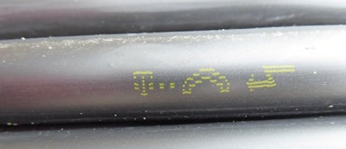
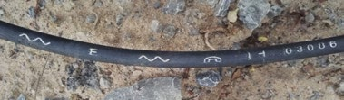

4 Gefährdungen
Beschädigte Leitungen können Personen gefährden und Auslöser für weitere Sachschäden sein.
Nachfolgend werden nur mögliche Gefährdungen für Personen aufgeführt.
4.1 Elektroleitungen
- Bei der Beschädigung von Elektroleitungen, z. B. durch Erdbaumaschinen, Erdnägel, Fluchteisen, Werkzeuge, Abbohrungen bei Leckgassuche sowie bei direktem Kontakt mit einem stromführenden Leiter besteht unmittelbare Lebensgefahr durch Körperdurchströmung oder Störlichtbogen.
- Durch mechanische Beschädigung der Isolierung, z. B. durch Biegen mit kleinem Radius, kann es sofort oder nach einiger Zeit zu einem Kurzschluss mit Störlichtbogen kommen.
4.2 Gasleitungen
- Infolge mechanischer Beschädigung oder durch Korrosion infolge einer Beschädigung der Außenumhüllung kann Gas austreten und mit der Umgebungsluft eine explosionsfähige Atmosphäre bilden.
- Mechanisch oder elektrisch erzeugte Funken, offene Flammen, heiße Oberflächen, elektrostatische Entladungen oder andere Zündquellen können das Gas-Luft-Gemisch entzünden.
4.3 Wasserleitungen
- Durch unkontrollierten Wasseraustritt kann die Standsicherheit der Böschung von Gräben, Baugruben und benachbarten Bauwerken beeinträchtigt werden.
- Gehweg- oder Fahrbahnbeläge können durch Unterspülung einbrechen.
- Baugruben und Gräben können überflutet werden.
4.4 Abwasserleitungen (Schmutz-, Oberflächen- und Mischwasserleitungen)
- Durch unkontrollierten Wasseraustritt kann die Standsicherheit der Böschung von Gräben, Baugruben und benachbarten Bauwerken beeinträchtigt werden.
- Die Beschäftigten können biologischen und chemischen Gefährdungen ausgesetzt sein.
4.5 Fernwärmeleitungen
- Durch unkontrolliertes Austreten von Dampf oder heißem Wasser besteht Verbrühungsgefahr.
- Durch unkontrolliertes Austreten von Dampf oder heißem Wasser kann die Standsicherheit der Böschung von Gräben, Baugruben und benachbarten Bauwerken beeinträchtigt werden.
4.6 Telekommunikationsleitungen
- Bei Telekommunikationsleitungen, die mit einem Blitzsymbol gekennzeichnet sind (Leitungen für Fernspeisung), kann bei direktem Kontakt unmittelbare Lebensgefahr bestehen.

Abb. 1 Telekommunikationsleitung
- Bei einer Beschädigung von Glasfaser-Telekommunikationsleitungen (auf dem Außenmantel mit "Wellenlinie" gekennzeichnet) können die Augen durch das Hineinblicken in den Lichtwellenleiter durch austretende Laserstrahlung gefährdet werden.

Abb. 2 Glasfaser-Telekommunikationsleitung mit "Wellenlinie"
4.7 Sonstige Leitungen (Produktleitungen), z. B. für Chemikalien, Kraftstoffe, Öle, technische Gase
- Die Gefährdungen sind produktabhängig und beim jeweiligen Betreiber zu erfragen.